Licheng Yu
My name is Licheng Yu (虞立成). I completed my PhD in Computer Science from University of North Carolina at Chapel Hill in 2019 May. My advisor is Tamara L. Berg. I also work closely with Mohit Bansal during my PhD study. My research interest lies in computer vision and natural language processing.
I completed my Master's degrees from both Georgia Tech and Shanghai Jiaotong University in 2014. I received my Bachelor's degree from Shanghai Jiao Tong University.
Email: lichengyu [at] fb.com
Address: 1 Hacker Way, Menlo Park, CA 94025
More info: [Resume], [Google Scholar], [LinkedIn], [GitHub].
Updates
- As always: Academic Countdown
- 2021.03: 1 paper accepted by CVPR 2021.
- 2020.09: 2 papers accepted by EMNLP 2020.
- 2020.07: 3 papers accepted by ECCV 2020.
- 2020.06: We are Winner of VQA 2020 Challenge.
- 2020.06: Organizer of LVVU 2020.
- 2020.04: 1 paper accepted by ACL 2020.
- 2020.03: 2 papers accepted by CVPR 2020.
- 2020.01: TVR dataset for Large-Scale Multi-Modal TV Retrieval and Captioning released.
- 2019.02: 1 paper accepted by CVPR 2019. Perhaps the LAST paper in my PhD study :-)
- 2019.02: 1 paper accepted by NAACL 2019.
- 2018.08: 1 paper accepted by EMNLP 2018 - super cool TVQA dataset.
- 2018.02: Referring Expression Demo online now (in CVPR2018).
- 2017.07: 1 paper accepted by EMNLP 2017.
- 2017.03: 1 paper accepted by CVPR 2017 (spotlight presentation 8.0%). Talk is here.
- 2016.07: 1 paper accepted by ECCV 2016 (spotlight presentation 4.7%). Talk is here.
- 2016.04: RefCOCO and RefCOCO+ dataset released: Referring Expression Dataset
- 2015.10: 1 paper accepted by ICCV 2015. Many thanks to those helping me.
- 2015.08: Visual Madlibs dataset released.
- 2015.01: 1 paper accepted by IEEE Transactions on Image Processing.
- 2014.11: 1 paper accepted by AAAI 2015.
Work Experience
|
|
2020.03—future : |
Senior Research Scientist |

|
2019.06—2020.03: |
Researcher |
| Graduated | ||
|
2014.08—2019.05: |
Research Assistant |
|
|
|
2018.05—2018.08: |
Research Intern |

|
2017.05—2017.08: |
Research Intern |
|
2016.05—2016.08: |
Research Intern |
|
|
2011.09—2014.04:
|
Research Assistant
|
Projects & Publications
| 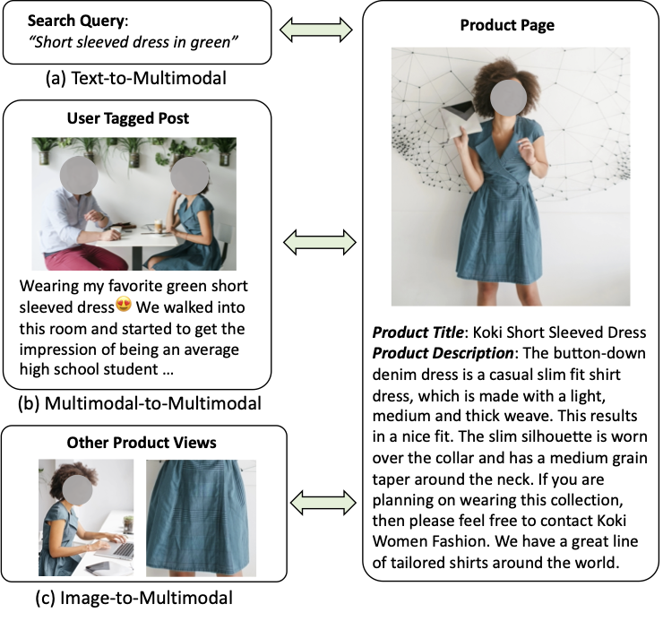 |
CommerceMM: Large-Scale Commerce MultiModal Representation Learning with Omni Retrieval
arXiv:2202.07247v1
Licheng Yu, Jun Chen, Animesh Sinha, Mengjiao MJ Wang, Yu Chen, Tamara L. Berg, Ning Zhang
[Paper]
|
| 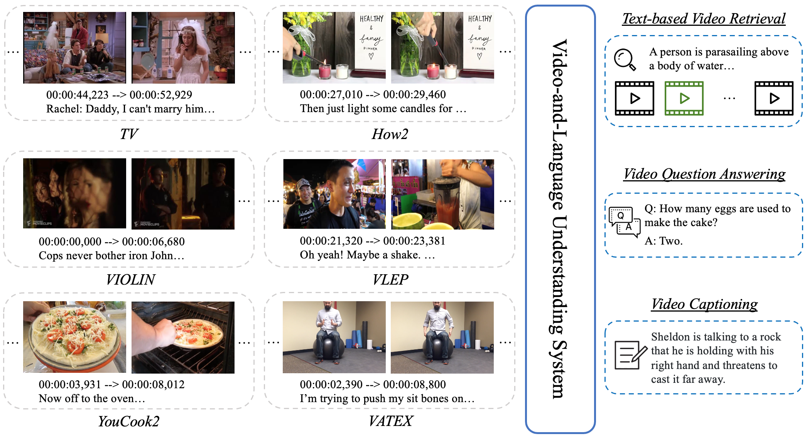 |
VALUE: A Multi-Task Benchmark for Video-and-Language Understanding Evaluation
NeurIPS 2021
Linjie Li, Jie Lei, Zhe Gan, Licheng Yu, Yen-Chun Chen, Rohit Pillai, Yu Cheng, Luowei Zhou, Xin Eric Wang, William Yang Wang, Tamara L. Berg, Mohit Bansal, Jingjing Liu, Lijuan Wang, Zicheng Liu
[Paper][Leaderboard]
|
| 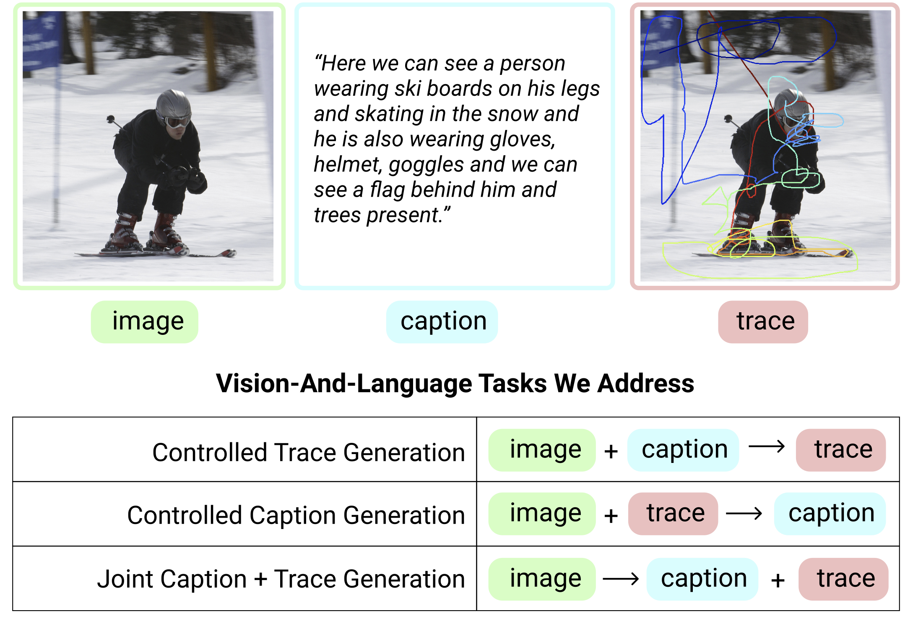 | |
| 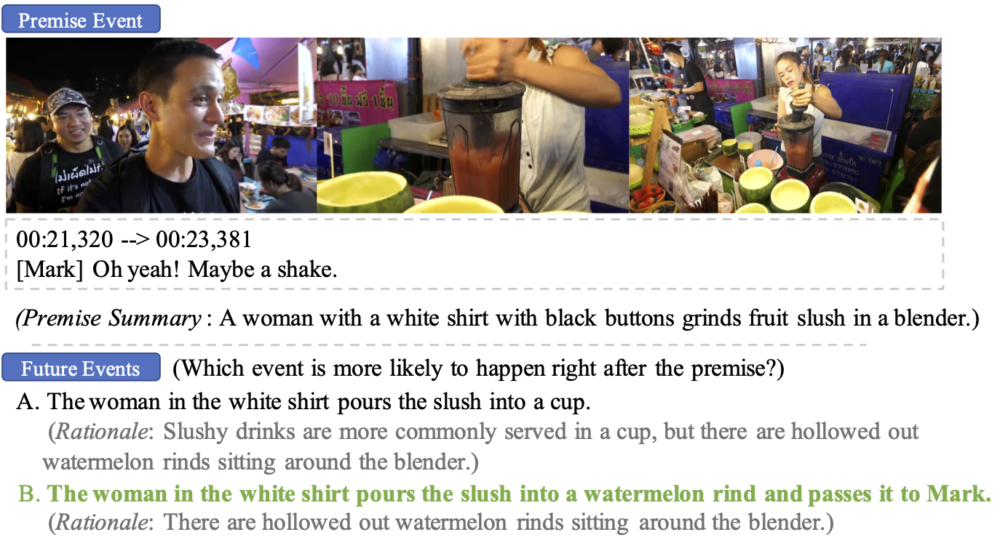 |
What is More Likely to Happen Next? Video-and-Language Future Event Prediction
EMNLP 2020
Jie Lei, Licheng Yu, Tamara L. Berg, Mohit Bansal
|
| 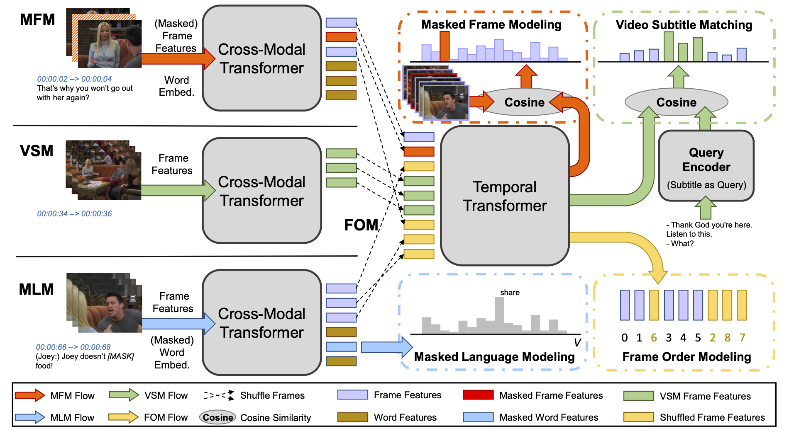 |
HERO: Hierarchical Encoder for Video+Language Omni-representation Pre-training
EMNLP 2020
Linjie Li*, Yen-Chun Chen*, Yu Cheng, Zhe Gan, Licheng Yu, Jingjing Liu
Rank 1 on TVR Leaderboard(*First 2 authors contribute equally.) Rank 1 on TVC Leaderboard |
| 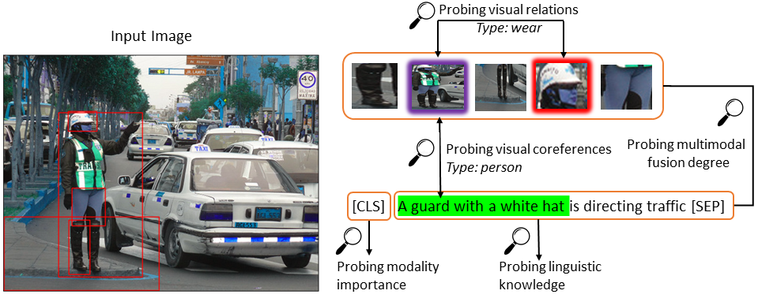 | |
| 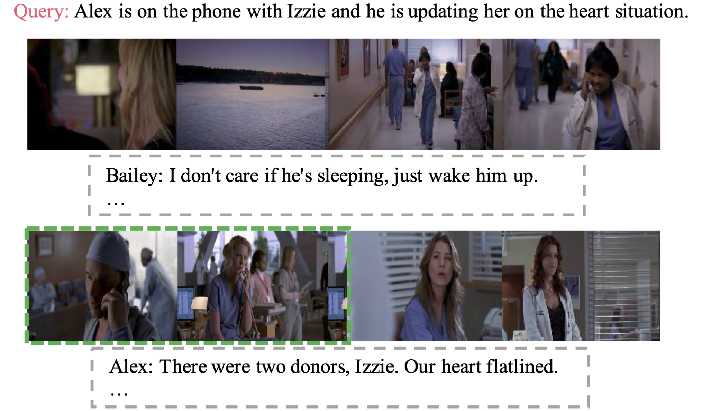 |
TVR: A Large-Scale Dataset for Video-Subtitle Moment Retrieval
ECCV 2020
Jie Lei, Licheng Yu, Tamara L. Berg, Mohit Bansal
|
| 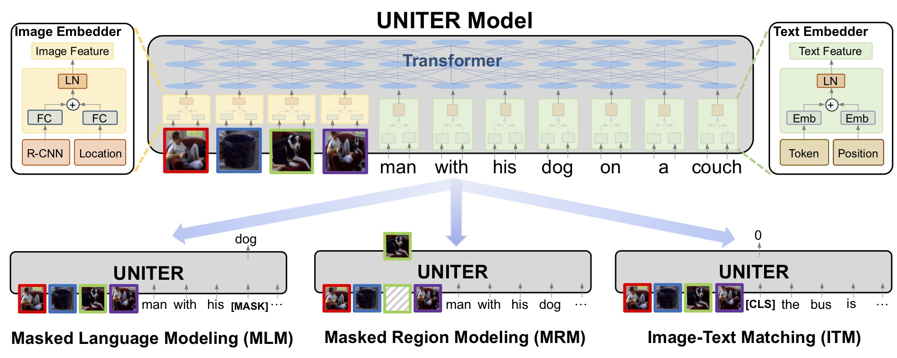 |
UNITER: Learning UNiversal Image-Text Representations
ECCV 2020
Yen-Chun Chen*, Linjie Li*, Licheng Yu*, Ahmed El Kholy, Faisal Ahmed, Zhe Gan, Yu Cheng, Jingjing Liu
(*First 3 authors contribute equally.)
Achieving SOTA on 13 Vision+Language Datasets/Tasks, and
Rank 1 on VCR Leaderboard Rank 1 on NLVR2 Leaderboard |
| 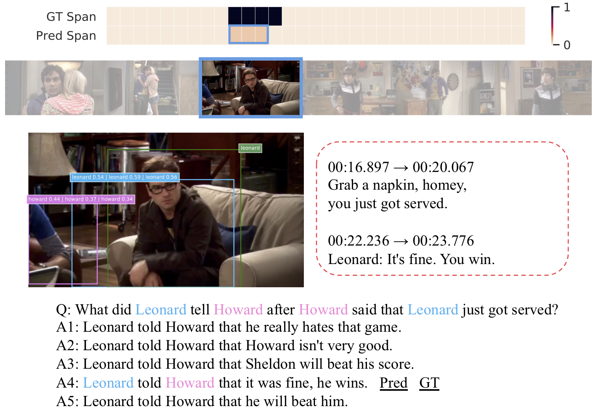 | |
| 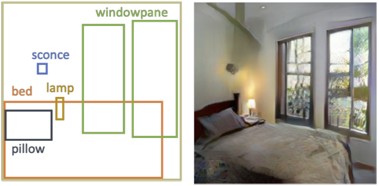 | |
| 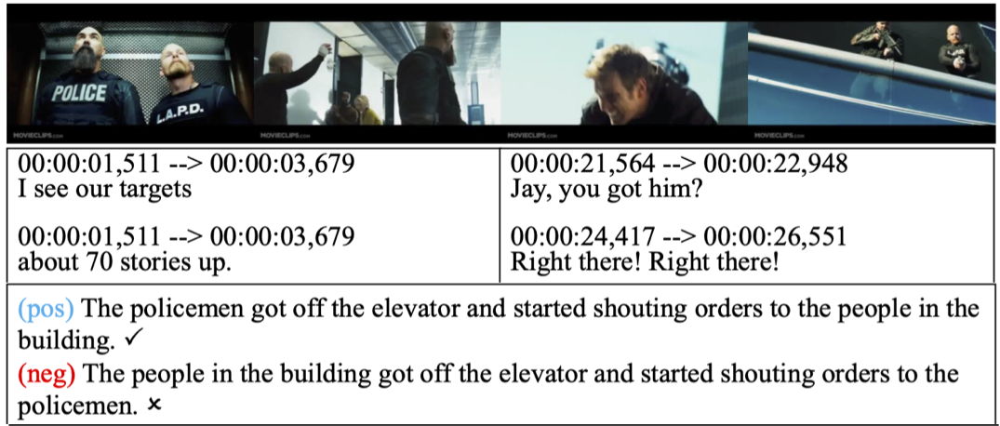 | |
| 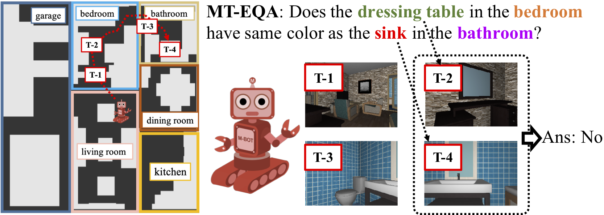 | |
|
Learning to Navigate Unseen Environments: Back Translation with Environmental Dropout
NAACL 2019
Hao Tan, Licheng Yu, Mohit Bansal
| |

|
TVQA: Localized Compositional Video Question Answering
EMNLP 2018
Jie Lei, Licheng Yu, Mohit Bansal, Tamara L. Berg
|
| 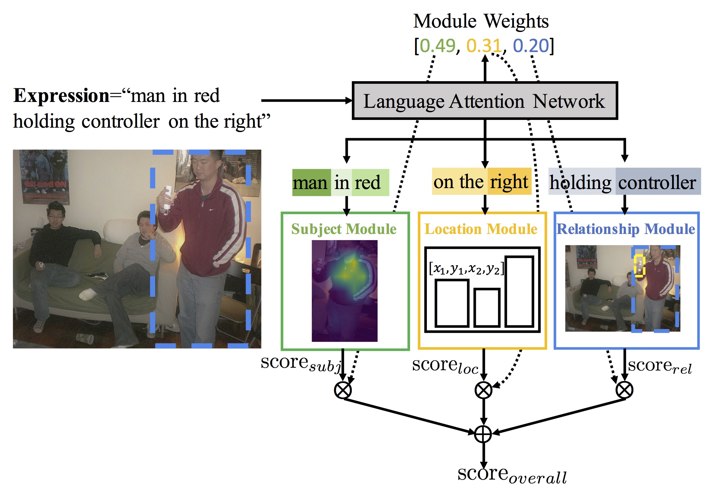 | |
| 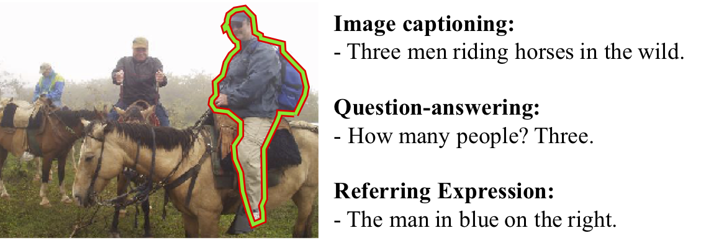 |
From Image to Language and Back Again
Journal of Natural Language Engineering (JNLE), 2018
Anya Belz, Tamara L. Berg, Licheng Yu
[Paper]
|
| 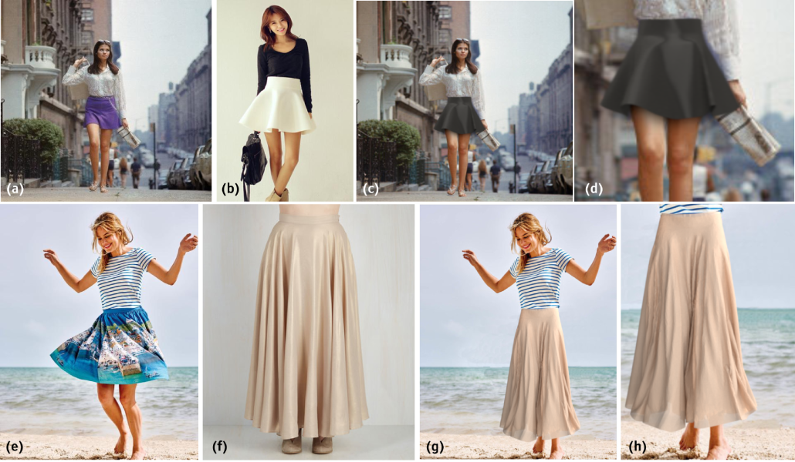 |
Physics-Inspired Garment Recovery from a Single-View Image
ACM Transactions on Graphics, 2018
Shan Yang, Tanya Ambert, Zherong Pan, Ke Wang, Licheng Yu, Tamara L. Berg, Ming C. Lin
|
| 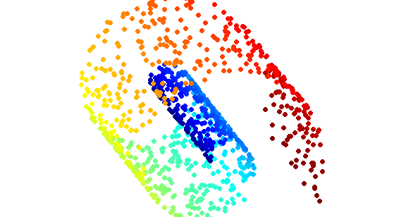 |
A Unified Framework for Manifold Landmarking
IEEE Transactions on Signal Processing, 2018
Hongteng Xu, Licheng Yu, Mark Davenport, Hongyuan Zha
[Paper]
|
| 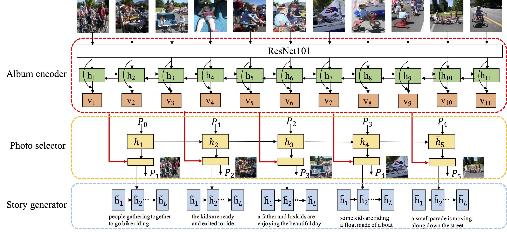 |
Hierarchically-Attentive RNN for Album Summarization and Storytelling
EMNLP 2017
Licheng Yu, Mohit Bansal, Tamara L. Berg
[Paper]
[Dataset API]
|
| 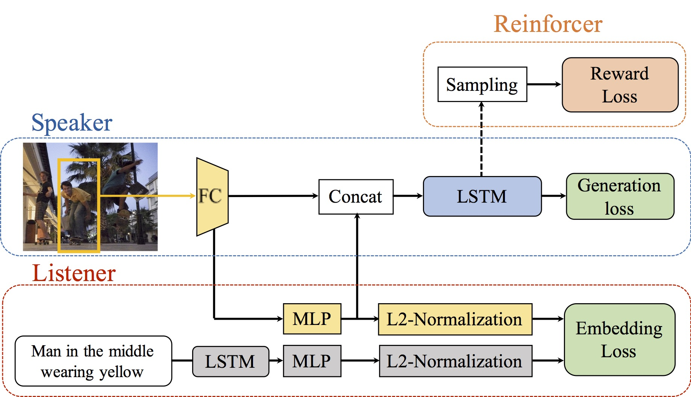 | |

|
|
| 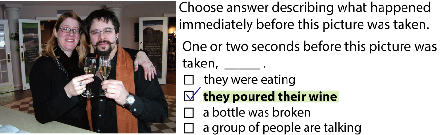 |
Visual Madlibs: Fill-in-the-blank Image Description and Question Answering
ICCV 2015
Licheng Yu, Eunbyung Park, Alexander C. Berg, Tamara L. Berg
|
| 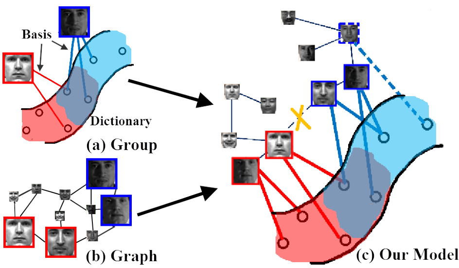 | |
| 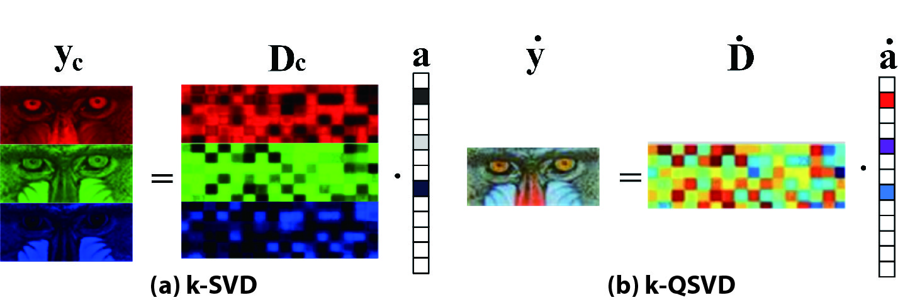 | |
| 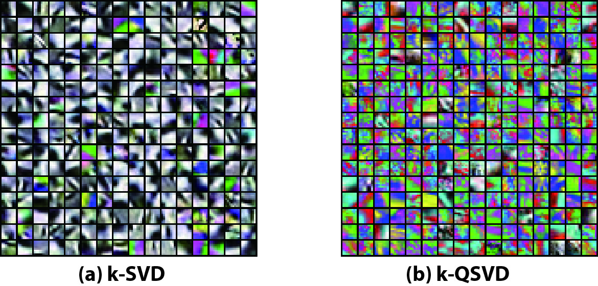 |
Quaternion-based Sparse Representation of Color Image
IEEE International Conference on Multimedia and Expo, ICME 2013
Licheng Yu, Yi Xu, Hongteng Xu, Hao Zhang
[Paper][Supplementary File] (Oral presentation)
|
|
Single Image Super-resolution via Phase Congruency Analysis
IEEE Visual Communications and Image Processing, VCIP 2013
Licheng Yu, Yi Xu, Bo Zhang
[Paper] (Oral presentation)
|
|
| 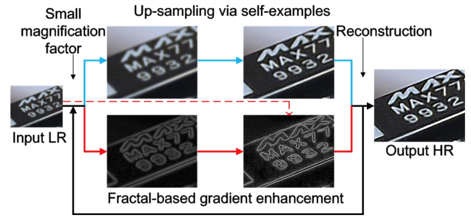 |
Self-Example Based Super-resolution with Fractal-based Gradient Enhancement
IEEE International Conference on Multimedia and Expo, ICME workshop 2013
Licheng Yu, Yi Xu, Hongteng Xu
[Paper]
|
|
Robust Single Image Super-resolution based on Gradient Enhancement
APSIPA Annual Summit and Conference, APSIPA 2012
Licheng Yu, Yi Xu, Hongteng Xu, Xiaokang Yang
|
Miscellaneous
| 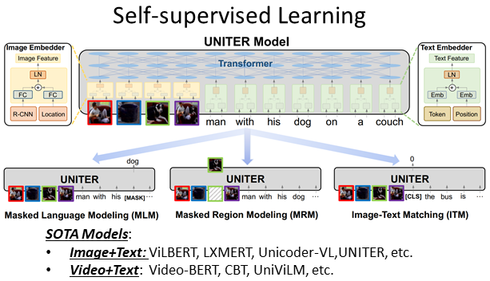 |
Self-supervised Learning for Vision-and-Language
Recent Advances in Vision-and-Language Research
CVPR 2020 Tutorial
Licheng Yu, Linjie Li, Yen-Chun Chen
|
| 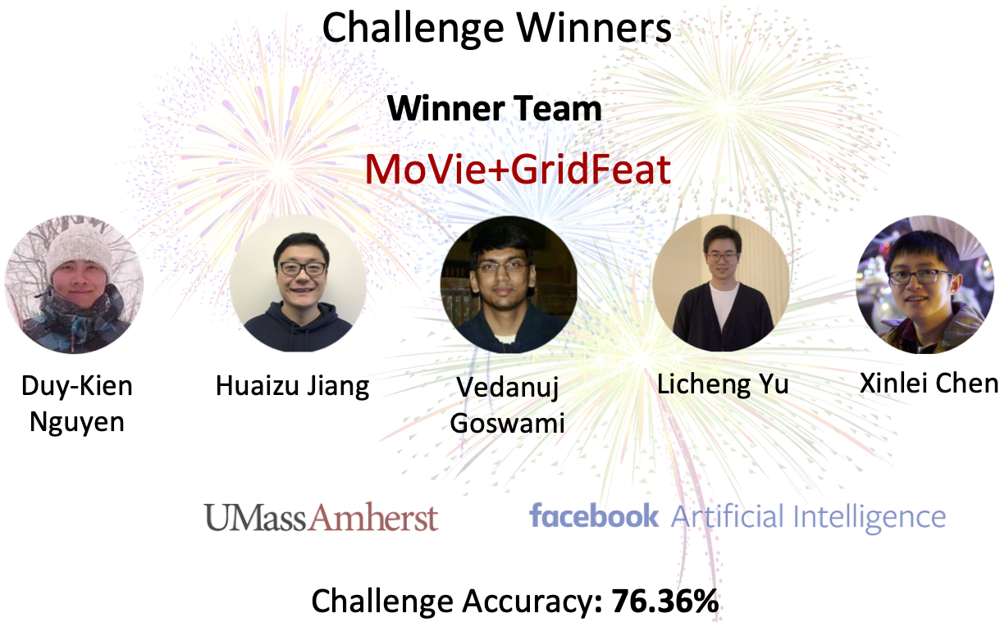 |
Revisiting Grid Features for VQA
Duy-Kien Nguyen, Huaizu Jiang, Vedanuj Goswami, Licheng Yu, Xinlei Chen
Winner of VQA 2020 Challenge
|
| 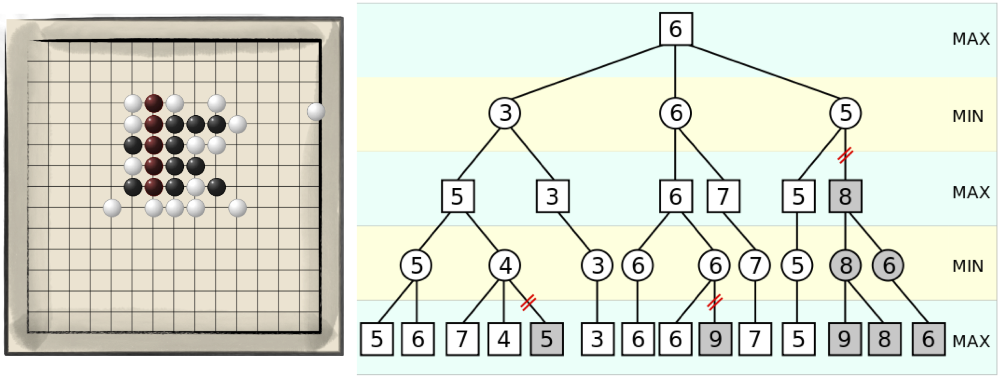 | |
| 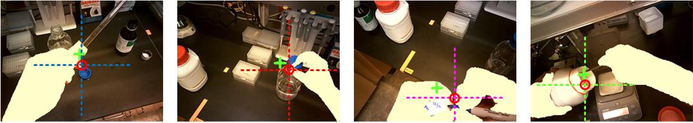 |